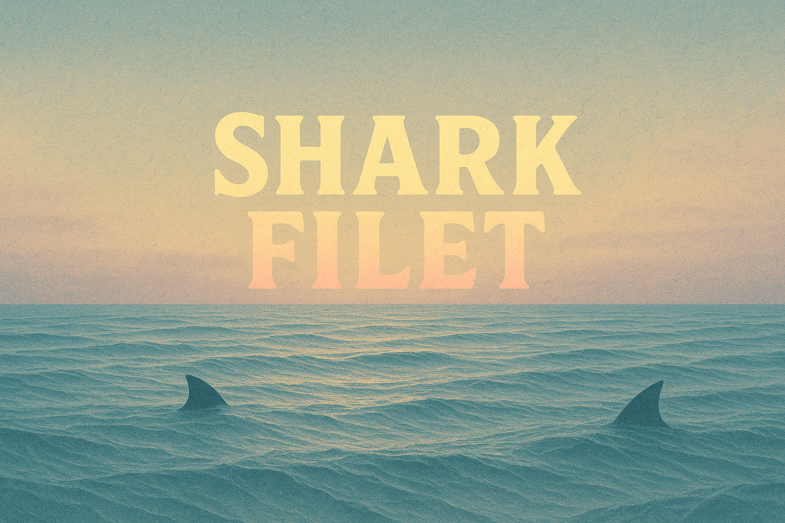
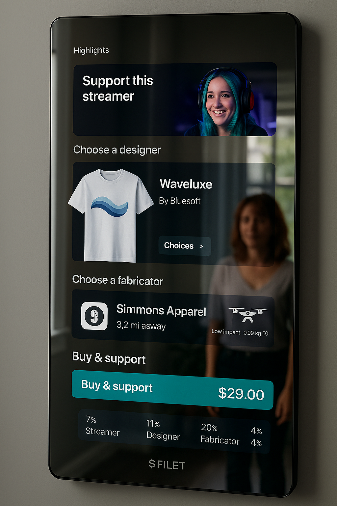
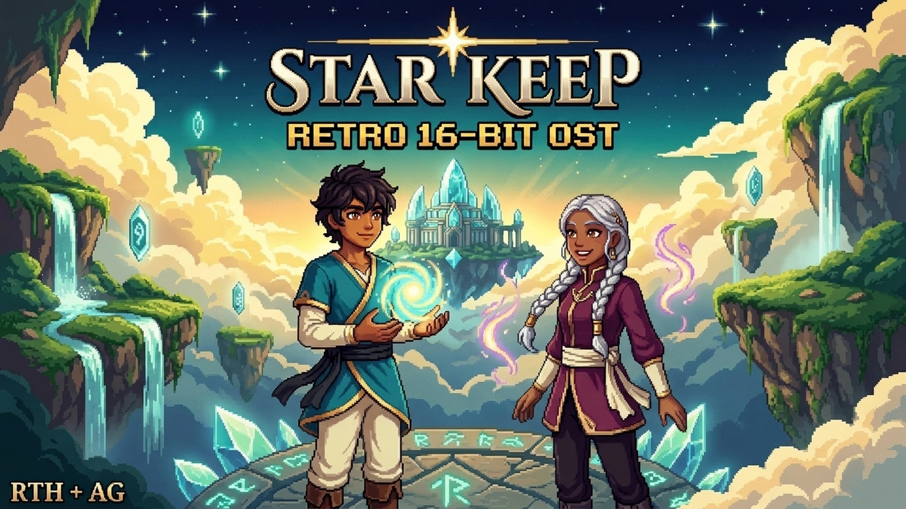

01 / Venture
Creator commerce
SharkFilet connects CreatorOS business tools, EmotiConnect adaptive protocols, and SharkCare mutual-aid split ledgers into a sovereign creator economy.
Rolando Tin Huerta Jr. is a multidisciplinary systems architect, founder, and published author operating at the convergence of cognitive software systems, sovereign creator commerce, and the Star Keep transmedia universe.
A working portfolio bridging executive transaction rigor and transmedia world-building.
Turn ambitious ideas into durable systems—then make those systems useful to real people.
SharkFilet connects CreatorOS business tools, EmotiConnect adaptive protocols, and SharkCare mutual-aid split ledgers into a sovereign creator economy.
A 960+ page operational blueprint and local-first Second Brain architecture uniting algorithmic transaction splitting, governance, and execution.
Published sci-fi novels, Webtoon Canvas serialization, playable RPG prototypes, a 15-slide Visual Bible, and original 16-bit OST volumes.
Playable RPG builds, a live SharkFilet platform demo, the 15-slide Star Keep Visual Bible, fine-art prints, and YouTube channels.

A four-year RPG build in RPG Maker MZ & Node.js—playable in-browser on Itch.io.

The live platform uniting CreatorOS infrastructure, algorithmic value splits, and creator-first commerce.

Explore original digital artwork, visual studies, and fine-art prints available online.

Watch the guided video walkthrough of SharkFilet.com and CreatorOS tooling.

Complete 15-slide universe presentation covering the Ark Stream, Zo & Tali, and Soulcraft mechanics.
Systems architecture notes, creative essays, philosophy, and founder builds.
Open Channel ↗SharkFilet.com walkthroughs, CreatorOS updates, and creator commerce tools.
Open Channel ↗Star Keep full-album soundtrack streams, manga trailers, and RPG showcases.
Open Channel ↗31 original BeepBox tracks across Vol. 1 & Vol. 2. Top-deck console + full bottom song list.

VOL. 1 · ADVENTURE31 retro 16-bit chiptune and cosmic lo-fi tracks synthesized in BeepBox by Rolando Huerta (RTH + AG).
A working thesisCreators should not have to abandon the platforms they love in order to build durable businesses, communities, and lives.
For systems architecture, strategic partnerships, creative collaboration, or thoughtful questions.